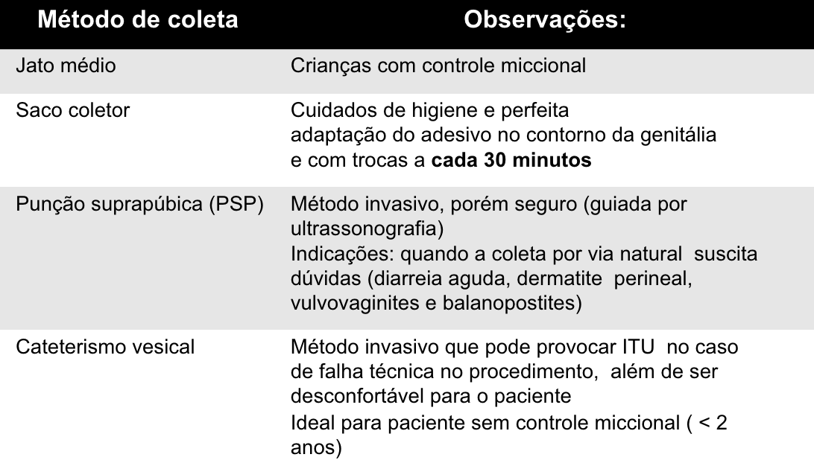

ITU, Síndrome Nefrítica e Síndrome Nefrótica em Pediatria
PARTE 1 — Infecção do Trato Urinário (ITU)
Definição
Multiplicação de um único germe patogênico em qualquer segmento do trato urinário, identificado por urocultura coletada por método confiável.
2ª infecção bacteriana mais prevalente em pediatria (depois de IVAS)
Epidemiologia
- Meninas <7 anos: mais frequente
- 1º ano de vida: acomete igualmente ambos os sexos
- Picos de incidência: lactência, 2ª infância e adolescência
Classificação
| Tipo | Localização | Principal Sintoma |
|---|---|---|
| Cistite | Bexiga (baixa) | Disúria, polaciúria, urgência miccional |
| Pielonefrite | Rim (alta) | Febre alta + dor lombar + Giordano + toxemia |
Agente Etiológico
- E. coli: 80–90% dos casos (mais comum)
- Outros: Klebsiella, Proteus, Enterococcus
Quadro Clínico por Faixa Etária
| Faixa Etária | Apresentação |
|---|---|
| RN | Síndrome séptica inespecífica (febre/hipotermia, irritabilidade, icterícia, baixo ganho de peso) |
| Lactente | Principalmente febre sem foco (FSSL = febre sem sinais de localização) |
| Pré-escolar/escolar | Sintomas urinários clássicos: disúria, polaciúria, urgência; pielonefrite: febre + Giordano positivo |
| Adolescente | Similar ao adulto |
Coleta de Urina — Método Correto

| Método | Indicação | Observação |
|---|---|---|
| Saco coletor | Triagem (baixa especificidade) | Não confirma diagnóstico — apenas descarta se negativo |
| Cateterismo vesical | <2 anos sem controle esfincteriano | Método de escolha nessa faixa etária para diagnóstico |
| Punção suprapúbica | RN e lactentes | Invasivo, usado quando há suspeita de germe incomum |
| Jato médio | Crianças com controle esfincteriano (>2–3 anos) | Padrão para escolares |
Diagnóstico
Urina 1 (Urinálise): triagem — não confirma ITU
- Piúria: ≥5 piócitos/campo (ou >10.000 piócitos/mL)
- Bacteriúria: bactérias visíveis na urina não centrifugada (Gram)
- Nitrito positivo: bactérias gram-negativas (sensível, mas demora 4h para formar)
Urocultura: PADRÃO OURO
- ≥100.000 UFC/mL de um único agente = positivo
- <10.000 UFC/mL = negativo
- 2 ou mais cepas diferentes = contaminação
Tratamento
Princípios:
- Cobertura empírica para E. coli (conforme sensibilidade local)
- Duração: 10 dias (por 7 dias em cistite escolar)
- Via oral preferencial em maiores de 3 meses
Antibióticos de escolha:
- Cefalosporina oral (cefalexina, cefuroxima) — 1ª linha
- Sulfametoxazol-trimetoprim: verificar sensibilidade local (resistência variável)
Internação:
- <2 meses de vida
- Sepse / quadro grave
- Intolerância oral / risco de má adesão
- Anomalia estrutural do trato urinário
Refluxo Vesicoureteral (RVU)
- Retorno da urina da bexiga para o ureter/rim
- Graus I–V (I: ureter; V: ureter dilatado + cálices côncavos + dobras)
- Diagnóstico: Cistouretografia Miccional (CUM)
- Risco: ITU ascendente → cicatriz renal → HAS / IRC na vida adulta
- RVU alto grau com ITU de repetição: profilaxia com ATB baixa dose
PARTE 2 — Síndrome Nefrítica
Definição
Tríade: Edema + Hipertensão Arterial + Hematúria
Causa mais comum em crianças: Glomerulonefrite Difusa Aguda Pós-Estreptocócica (GNDA-PI)
GNDA-PI — Características
| Aspecto | Dado |
|---|---|
| Faixa etária | 5–15 anos, predomínio masculino |
| Intervalo | 1–2 semanas pós-infecção faríngea ou 3–6 semanas pós-infecção de pele |
| Agente | Streptococcus pyogenes (β-hemolítico grupo A), cepas nefritogênicas |
| Mecanismo | Imunocomplexos → deposição glomerular → ativação complemento → inflamação |
Achados Clínicos e Laboratoriais
- Hematúria macroscópica ("urina coca-cola") ou microscópica + cilindros hemáticos
- Edema periorbitário e de MMII (retenção de sódio e água)
- HAS secundária à expansão de volume
- Laboratório: C3 baixo (normaliza em 6–8 semanas), C4 normal, ASLO elevado, creatinina elevada
Tratamento
- Restrição hídrica: 20 mL/kg/dia ou 300–400 mL/m²/dia
- Dieta hipossódica
- Anti-hipertensivo se necessário
- Diurético (furosemida) em casos de hipervolemia grave
- Maioria: tratamento ambulatorial; internação se HAS grave, LRA ou hipercalemia
Evolução
- Edema desaparece: 7–15 dias
- PA normaliza: 2–3 dias após edema
- C3 normaliza: 6–8 semanas
- Hematúria microscópica pode persistir por 1–2 anos (sem implicar complicação)
PARTE 3 — Síndrome Nefrótica
Definição
- Proteinúria maciça (>50 mg/kg/24h ou relação P/Cr >2 mg/mg)
- Hipoalbuminemia (≤2,5 g/dL)
- Edema (mole, frio, gravitacional, pode evoluir para anasarca)
- Hiperlipidemia
Causa mais Comum em Pediatria
Doença de Lesão Mínima (Nefropatia de Lesão Mínima)
- Faixa etária: 2–7 anos, meninos mais afetados
- 80–90% dos casos em crianças <8 anos
- Biópsia renal não necessária nos casos típicos que respondem à prednisona
Sinais Clínicos
- Edema intenso, dependente da gravidade
- Anasarca (ascite + derrame pleural + edema genital)
- Espuma na urina (proteinúria)
- Sinais de desnutrição proteica
Tratamento
Suporte:
- Dieta hipossódica enquanto houver edema
- Diurético tiazídico (hidroclorotiazida 2–5 mg/kg/dia) em edema sem hipovolemia
- Furosemida + albumina 20% nos edemas graves com anasarca
Específico:
- Prednisona 60 mg/m²/dia (ou 2 mg/kg/dia, máximo 60 mg) — dose única diária por 4–6 semanas
- Remissão → reduzir para 40 mg/m² em dias alternados por mais 4–6 semanas
Indicação de Biópsia Renal
- <1 ano ou >12 anos
- Ausência de resposta à prednisona após 8 semanas (síndrome nefrótica corticorresistente)
- Hematúria macroscópica significativa
- HAS persistente
- Função renal alterada
Tabela Comparativa: Nefrítica × Nefrótica
| Característica | Síndrome Nefrítica | Síndrome Nefrótica |
|---|---|---|
| Hematúria | Presente (marcador) | Ausente ou microscópica |
| Hipertensão | Presente | Ausente ou discreta |
| Edema | Discreto (retenção volêmica) | Intenso/anasarca |
| Proteinúria | Baixa a moderada (<3,5 g/24h) | Maciça (>50 mg/kg/24h) |
| Albumina sérica | Normal | Baixa (<2,5 g/dL) |
| Complemento (C3) | Baixo | Normal |
| Causa mais comum | GNDA pós-estreptocócica | Lesão mínima |
| Faixa etária típica | 5–15 anos | 2–7 anos |
Alertas OSCE ⚠️
- Lactente febril sem foco → sempre pensar em ITU → urocultura antes do ATB
- Saco coletor: só serve para triagem (descartar se negativo; não confirma se positivo)
- ITU = urocultura positiva — não diagnosticar só por urina 1
- C3 baixo na nefrítica; C3 normal na nefrótica — ponto diferenciador chave
- Nefrótica: corticorresistência → biópsia (síndrome de Alport, glomeruloesclerose segmentar focal)
Fonte
- Gerado a partir de:
conteudo_itu.md(Aula 11 — ITU + Caso ITU; Síndrome Nefrítica e Nefrótica) - Seções consultadas: definição, classificação cistite/pielonefrite, métodos de coleta, urocultura, RVU, GNDA, síndrome nefrótica, tratamento
- Gaps identificados: Refluxo vesicoureteral (graus de classificação) complementado com conhecimento geral